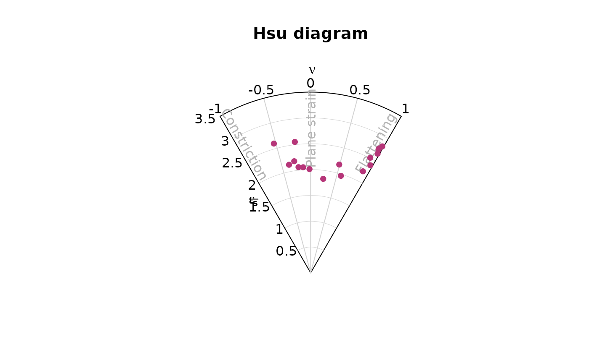
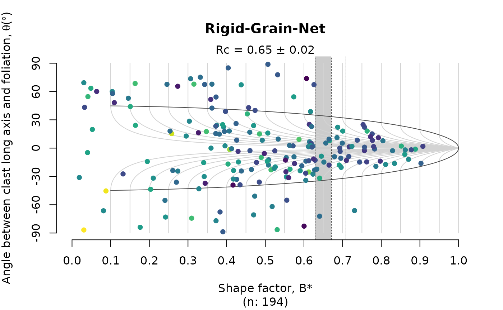

Strain and Vorticity Analysis
Tobias Stephan
2025-11-04
Source:vignettes/Strain_Analysis.Rmd
Strain_Analysis.RmdThis tutorial demonstrates how to perform strain and vorticity analysis using the {structr} package in R.
Strain analysis
Import some Rf/ϕ data from elliptical strain markers
data(ramsay)
head(ramsay)
#> R phi
#> [1,] 1.24 35.96
#> [2,] 1.52 27.59
#> [3,] 1.33 36.91
#> [4,] 1.78 27.31
#> [5,] 1.51 17.73
#> [6,] 1.70 24.45The mean mean strain ellipse (shape and orientation) of deformed elliptical objects as strain markers can be calculated by using the mean shape matrix and its eigenvalues1:
ramsay_mean <- mean_strain_ellipse(r = ramsay[, 1], phi = ramsay[, 2])
print(ramsay_mean)
#> $R
#> [1] 1.628138
#>
#> $phi
#> [1] 25.73632
#>
#> $R_CI
#> [1] 1.59275 1.66359
#>
#> $phi_CI
#> [1] 24.71905 26.75180The {structr} algorithm also calculates bootstrapped 95% confidence interval.
To visualize the distribution of the strain values, we can calculate densities in Rf/ϕ space2 and plot them in a Rf/ϕ diagram3:
Rphi_plot(r = ramsay[, 1], phi = ramsay[, 2])
or in an Equidistant polar plot4:
Rphi_polar_plot(ramsay[, 1], ramsay[, 2], proj = "eqd")
3D Strain
Three-dimensional strain data are expressed by the ratio of the magnitudes of the 3 principal strain axes of the strain ellipsoid, . They can be represented in the Flinn diagram5, either linear or logarithmic.
data("holst")
R_XY <- holst[, "R_XY"]
R_YZ <- holst[, "R_YZ"]
flinn_plot(cbind(R_XY, R_YZ), log = TRUE, col = "#B63679", pch = 16)
or the Hsu diagram6 using the natural octahedral unit strain7 () and the Lode parameter8 ():

Vorticity analysis
The rigid grain net after (Jessup et al. 2007)9 plots the
distribution the strain ratio (R) of orientation
(phi) of porphyroclast over the theoretical distribution of
tailless clasts. The plot estimates the critical threshold
Rc marking the transition between the stable-sink position
and infinitely rotating porphyroclasts. This threshold can be
interpreted as the the mean kinematic vorticity number.
Here the Rc is estimated using the bootstrap method
described in Stephan et al. (2025)10.
data(shebandowan)
set.seed(20250411)
# Color code porphyroclasts by size of clast (area in log-scale):
RGN_plot(shebandowan$r, shebandowan$phi, col = assign_col(log(shebandowan$area)), pch = 16)